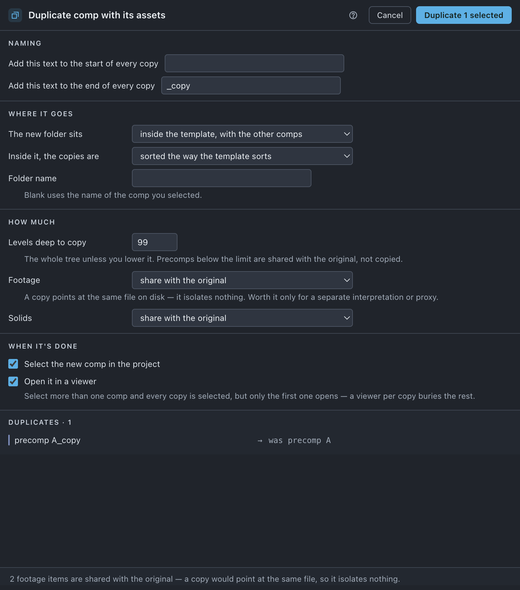

Duplicate
Copies a comp and the precomp tree under it, rewired to the copies — so editing the copy does not edit the original, which is what After Effects' own ⌘D cannot promise.
Use it when
- A client wants a second version of a build and you need to change things inside it.
- You are about to try something drastic and want the original intact beside it.
- A spot has to go out in three lengths and each needs its own guts.
- You have duplicated a comp with ⌘D before, edited a precomp, and broken the original.
What it does
Copies the comp you selected and every precomp under it, then rewires the copies to point at each other rather than at the originals. Expressions inside the copies are repointed to the copies. The copies arrive in a new folder, filed the way your template files things, and the new comp is selected and opened for you.
What it does not do: it does not copy files on disk — a duplicated footage item points at the same file. It does not copy protected items, and it does not copy a precomp deeper than the level you set.
Do it
- Select the comp — or comps — in the Project panel.
- Press Duplicate.
- Set Levels deep to copy if you want only the top of the tree copied.
- Decide whether Footage and Solids are shared or copied.
- Say where the new folder sits and how the copies are laid out inside it.
- Read the preview. It names every copied item and where it lands.
- Press Duplicate n.
Scope. Selection only. With nothing selected the tile dims and says select something first. There is no scope switch: duplicating a whole project is not a thing this tool means. Selecting several comps duplicates each, and a precomp shared between two of them is copied once, not once per parent.

What you'll see
| Option | What it means |
|---|---|
| Levels deep to copy | 99 by default — The whole tree unless you lower it. Precomps below the limit are shared with the original, not copied. |
| Footage | share with the original (default) or make a second item — A copy points at the same file on disk — it isolates nothing. Worth it only for a separate interpretation or proxy. |
| Solids | share with the original (default) or make a second item. |
| Copies go | One question. wherever fits this project (default) — the folder template if you have run Organize on this project, otherwise where you are; the line under it says which and why. where you are — a new folder beside the selected comp, or inside a folder you have selected; dim when several comps and no folder are selected. at the top level — a new folder at the root. the folder template — a new folder with the other comps, sorted inside the way the template sorts. next to their originals, no new folder — each copy lands in its original's folder. Only the template choice ever creates template folders. |
| Folder name | Blank uses the name of the comp you selected. |
| Add this text to the start of every copy | Blank by default. |
| Add this text to the end of every copy | _copy by default. |
| Select the new comp in the project | On. |
| Open it in a viewer | On — Select more than one comp and every copy is selected, but only the first one opens — a viewer per copy buries the rest. |
Notes it may raise:
- Some expressions build comp names while they run. Those cannot be repointed, so a copy may still reach back to the original — check them after.
- n protected items were not copied. Layers that used them will point at the originals, so the copy is not fully independent.
- n footage items are shared with the original — a copy would point at the same file, so it isolates nothing.
Undo
One ⌘Z. Nothing on disk changes.
Watch out
Things you might not think to do
- Copy the top two levels and leave the deep guts shared. Levels deep to copy › 2. Useful when the bottom of the tree is a library you do not want three versions of.
- Duplicate a footage item so it can carry its own interpretation or proxy — Footage › make a second item. The note is honest that it isolates nothing else.
- Get the copies filed on arrival. Copies go › the folder template is what stops a duplicated tree being one flat heap. The folder you land in is not repeated inside itself — you get
comps/MAIN_copy/pre/MID_copy. It is the default once you have organized the project. - Duplicate before Resize if you want both sizes in one project.
Pairs with
Resize on the copy, to make a second deliverable size. Organize if you later want the copies filed with everything else rather than in their own folder. Set up each project explains what [KEEP] does here.